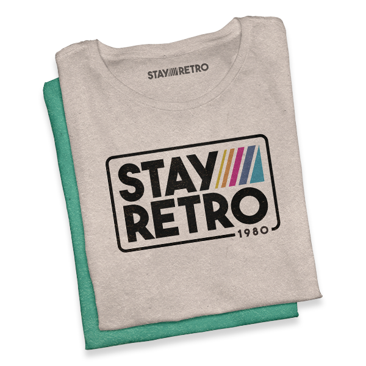
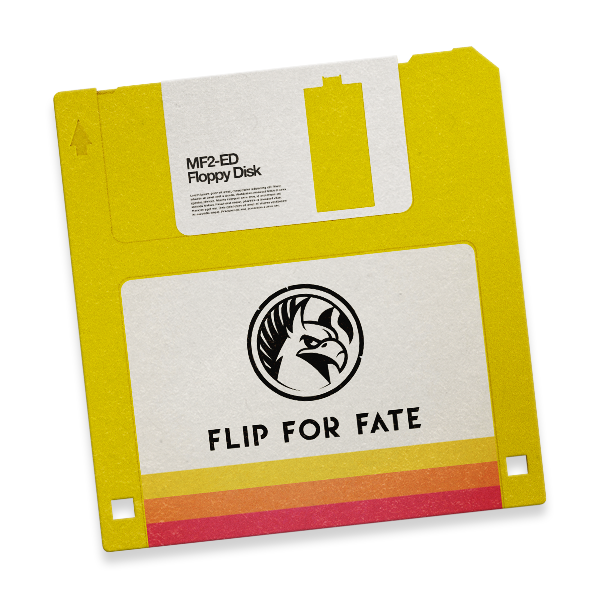

Våra varumärken...

Upptäck Stay Retros kollektion av t-shirts, tröjor och accessoarer som hyllar 80-talets spel och filmer. Perfekt för dig som vill addera en lekfull och nostalgisk touch till din vardagsstil.
stayretro.se »
stayretro.se »

Flip For Fate skapar nya äventyr som överbryggar klyftan mellan då och nu. Våra titlar är en kärleksfull hyllning till det förflutna, designade för att spelas på både klassiska och moderna system.
flipforfate.com »
flipforfate.com »